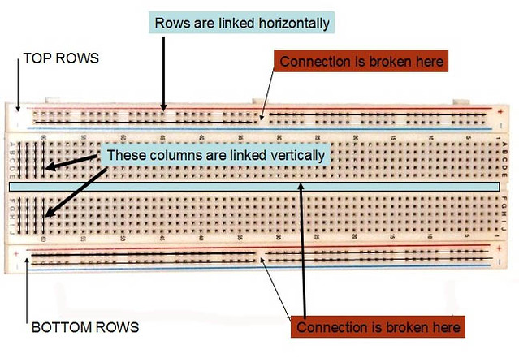

Op een breadboard bouw je een schakeling zonder te solderen: je steekt de poten van je componenten en je draden gewoon in de gaten. Onder het plastic zijn bepaalde gaten al met elkaar doorverbonden, en welke dat zijn bepaalt hoe je schakeling loopt.
Je ziet die verbindingen niet, want ze zitten onder de witte plaat. Twee poten in hetzelfde groepje gaten hangen elektrisch aan elkaar, ook al raken ze elkaar nergens aan. Twee poten in verschillende groepjes hebben met elkaar te maken zolang je er een draad tussen legt.

De bijschriften op de foto staan in het Engels. Top rows en bottom rows zijn de voedingsrails boven- en onderaan. Rows are linked horizontally zegt dat zo'n rail over zijn lengte doorverbonden is. These columns are linked vertically slaat op de kolommen van vijf gaten daartussen. En connection is broken here wijst naar de plaats waar een rail halverwege onderbroken is.
Langs de twee lange zijden lopen smalle stroken gaten met een rode en een blauwe lijn ernaast, en met een + en een − aan het uiteinde. Dat zijn de voedingsrails. Alle gaten van één rail hangen aan elkaar, over de volledige lengte van de plaat.
Daar sluit je de voeding van je Arduino op aan: een draad van de 5V-pin naar de rode rail, een draad van een GND-pin naar de blauwe. Vanaf dan kan je overal op de plaat aan 5 V en aan massa, zonder telkens tot bij de Arduino terug te moeten. In deze cursus lees je die twee daarom vaak als de plusrail en de massarail of GND-rail.
Op veel breadboards is elke rail halverwege onderbroken, en dat is de onderbreking waar de foto twee keer naar wijst. Je herkent ze aan een onderbreking in de rode of blauwe lijn ernaast. De linkerhelft en de rechterhelft van die rail zijn dan twee losse stukken: wat je links aansluit, staat rechts nergens. Wil je de voeding over de hele lengte, dan leg je een korte draad over de onderbreking heen. Bekijk je eigen plaat even, want er bestaan ook breadboards waarvan de rails wel gewoon doorlopen.
Tussen de twee voedingsrails ligt het grote middenveld met de letters en de cijfers. Daar zijn de gaten doorverbonden per vijf, dwars op de rails. Zo'n groepje van vijf noemen we een kolom. Elke kolom staat op zichzelf: de kolom ernaast is een apart knooppunt.
Op die vijf gaten bouw je je verbindingen. Steek je een weerstand en een draad in dezelfde kolom, dan hangen ze aan elkaar. Je hebt vijf gaten per kolom, dus je kan er tot vijf dingen in laten samenkomen. Eén gat is bezet door de poot zelf, wat er vier overlaat om verder te gaan.
Midden over het bord loopt een groef, en die groef scheidt het middenveld in twee helften. Een kolom boven de groef en de kolom eronder liggen wel in elkaars verlengde, maar ze zijn twee losse knooppunten. Die groef zit er met opzet: een IC met twee rijen pootjes past er precies overheen, zodat elke poot in zijn eigen kolom terechtkomt in plaats van kortgesloten te worden met de poot ertegenover.
In alle andere gevallen zijn het losse knooppunten, en leg je er zelf een draad tussen als je ze wil verbinden.